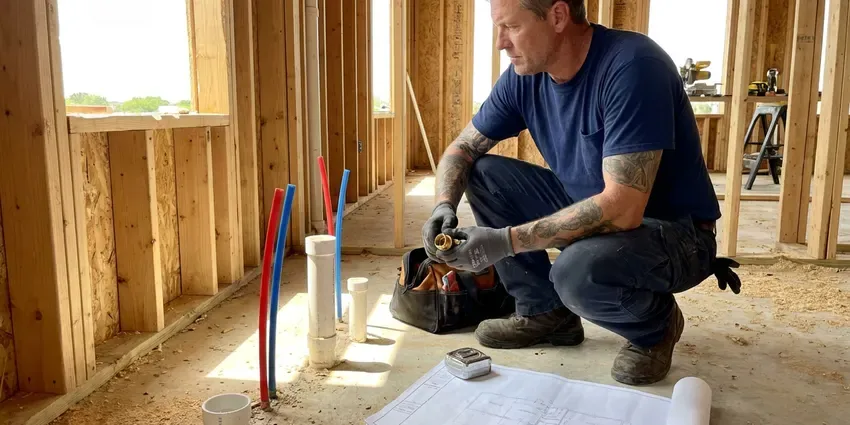

Emergency Plumber in Montpelier, VT
CKV Plumbing keeps emergency plumbers on call across Montpelier, VT, and the dispatcher can walk you through the shutoff.
- Stocked Service Trucks
- Certified for Gas Lines
- Licensed, Insured Plumbers
- First-Visit Repairs

Get the Leak Stopped Tonight in Montpelier, VT
Call (802) 209-5139. We quote the emergency rate on the phone.
When Water Won't Quit in Montpelier, VT
CKV Plumbing handles the emergencies that cannot wait for Monday in Montpelier, VT: burst pipe, main line backup, no water at all, or a gas odor near an appliance. We answer live. The dispatcher helps you close the main before the truck arrives so the damage stops growing while we drive.
Some of what we do:
- Quarter-turn stop upgrades
- Storm-night sump pump failures
- Cable machine and hydro-jet drain clearing

Additional Plumbing Maintenance Services in Montpelier, VT
Our maintenance and specialty plumbing services in Montpelier, VT protect your home year-round and extend the life of every system.


Customers
Why Choose CKV Plumbing for Emergency Plumber in Montpelier, VT?
Late-night pricing worries people. We give you the dispatch fee before the truck leaves and the full repair price before the plumber starts, and that number holds unless you approve a change. You decide whether a fix happens tonight or waits for regular hours.
- Price Up Front, The dispatch fee is quoted on the call and see the repair price before work begins.
- Live Answering, A dispatcher answers at any hour and helps you close the main while the truck heads out.
- Vermont Licensed, Our plumbers are licensed in Vermont and work to the plumbing and fuel gas codes your city enforces.
Citywide Coverage
Downtown condos and rural homes on wells both get emergency service from us around Montpelier. Wells come with their own issues. Our trucks carry pressure switches and tank fittings in addition to the standard city water parts.
Experienced Team
Each plumber on our night rotation has hundreds of service calls behind them, so a split PEX fitting or a failed regulator is familiar ground. They diagnose before they cut. We train on gas testing and backflow work every year.
Safety-First Approach
Standing water near an outlet or water heater is checked for shock risk before anything else. Our plumbers shut breakers when needed. Every repair follows the Vermont plumbing code and any Montpelier amendments, including support spacing on long runs and approved fittings at every joint.
Trusted Certified Montpelier Plumbing Services Professionals
At CKV Plumbing, we are proud to offer certified plumbing services throughout Montpelier, VT. Those papers on the wall mean something. Every repair, install and maintenance visit follows strict safety and quality rules, and the plumbers doing the work carry recognized industry credentials.
Call Us Now PHCC Plumbing Contractor Recognition
PHCC Plumbing Contractor Recognition Better Business Bureau (BBB) Accreditation
Better Business Bureau (BBB) Accreditation Angi Certified Pro
Angi Certified Pro ISO 9001 Quality Management Certification
ISO 9001 Quality Management CertificationTypical Plumbing Emergencies in Montpelier, VT
Commercial Emergency Plumbing in Montpelier, VT
A restaurant with a backed-up floor drain at 6 p.m. on a Friday loses money every minute it waits. We clear grease lines with jetters, repair burst branches in offices and get commercial water heaters firing again, working around your hours when the space is occupied. Health code matters here. We fix it and you reopen.

Gas Line Emergency Services in Montpelier
A dead strip of grass over the yard line can be a sign of a slow gas leak. So can bubbling in a puddle. Our licensed plumbers shut the supply, locate the leak with a detector and soap test, and swap in new pipe and fittings rated for fuel gas, then hold a pressure test for the time your local code requires. Pilots get relit only after the test passes.
Sump Pump Failure Repair in Montpelier, VT
Ice dams and frozen ground in late winter can send meltwater toward foundations, making a working sump pump important. A pump that hums but does not move water often has debris locked in the impeller. One that never kicks on points to the float. Our plumbers in Montpelier pull the pump, clear or replace it with a Zoeller or Wayne unit sized for your pit, and suggest a battery backup if the trouble keeps coming during outages. We test it with a bucket of water before leaving.
Overflowing Toilet Help in Montpelier, VT
Turn the oval valve behind the toilet clockwise. That stops the tank from refilling. We clear the blockage with a closet auger, which will not scratch porcelain, and check whether the clog sits in the trap or further down the line, because a weekly overflow tends to mean trouble in the main. A failed fill valve or a seized stop gets replaced on the same visit.
Sewer Line Backups in Montpelier, VT
Sewage coming up a floor drain or the lowest tub in the house is a main line blockage until proven otherwise. Stop running water. We open the outside cleanout, clear the line with a cable machine, then camera the pipe to learn whether it was roots, grease or a cracked joint. You see the footage yourself.
Gas Odor Calls in Montpelier, VT
If you smell gas indoors, leave first. Call 911 or the gas utility once you are a safe distance away, and do not start a car in an attached garage. After the scene is cleared, our licensed plumbers locate the leak, replace the bad pipe and pressure test the whole run. We inspect each appliance connector as well.
Overflowing Toilets and Runaway Fixtures in Montpelier
A faucet that will not shut off can flood a vanity cabinet in minutes. Older multi-turn stops often seize, so the homeowner cannot close them. We replace the cartridge, fill valve or flapper that failed, then change the seized stop to a quarter-turn valve. That way you can shut it off yourself next time.

Leaking Tank Water Heaters in Montpelier, VT
Hard water sediment cuts years off a tank, and the first leak often shows up at the bottom seam. A relief valve that drips after a hot shower is a separate problem, often high pressure or a failed expansion tank. We repair valves, thermocouples and connections, and when a tank has rusted through we can usually swap it the same day. Rheem and AO Smith are the brands we see most.
A 24/7 Plumber Close to You in Montpelier, VT
Our plumbers live and work around Montpelier, VT, which makes the follow-up visit easy. A temporary fix at midnight can become a full repair during regular hours, often with the same plumber who handled the night call.
Need a plumber near you tonight? Call (802) 209-5139 and a live person picks up. We send the nearest available truck in Montpelier already carrying fittings, valves and a drain machine, so the repair can start as soon as the plumber walks in.
CKV Plumbing at a Glance
- Fully licensed plumbing team covering Montpelier, VT
- Same-day appointments and 24/7 emergency response
- Clear written estimates, no hidden fees
- 4.8-star rated by 553+ Vermont customers
Montpelier Map
Montpelier Information
- Population
- 7,991
- Area codes
- Local
- Service area
- Montpelier and communities within 40 miles
- Nearby
- Barre, St. Johnsbury, Essex Junction, South Burlington
Ground movement under a house can crack drain lines and shear supply pipe at the slab, and the first sign is often a meter spinning with every tap shut. Fast service keeps a leak from turning into a flooring job in Montpelier, VT. Most Vermont homes have full basements, many with fieldstone or older foundations that can let in groundwater during wet seasons.
Expert Services
Reach out to CKV Plumbing for honest, reliable plumbing from people who know the trade in Montpelier, VT.
Our Specialized Plumbing Services in Montpelier, VT
At CKV Plumbing, we handle the full list of plumbing services across Montpelier, VT. From leak detection to full system installs, our team works fast and charges fair prices on homes and commercial properties alike. Take a look at our core services below:


How We Run an Emergency Call in Montpelier, VT
The plumber points out what failed and gives you a price before any work begins.
Call (802) 209-5139
A live dispatcher helps you close the gas or water and sends the nearest plumber.
Stop the Damage
Stopping the leak or backup comes first, then finds the cause and prices the fix.
Repair and Clean Up
The repair gets finished, tested and cleaned up, then go over the work with you.
Frequently Asked Questions About Emergency Plumber in Montpelier
That depends on the failed part. A toilet clog or a leaking supply connector is a small job, while a burst pipe inside a finished wall or a main line backup can run $500 to $1,500 or more when walls have to open. You get the price before work starts.
Anything that is damaging the house right now or makes the plumbing unusable. That includes sewage backups and burst pipes. So does a toilet that will not stop overflowing after a flush, any gas odor, or no water at all.
Absolutely. CKV Plumbing clears commercial grease lines, repairs burst branches and gets commercial water heaters running again across Montpelier, working nights so you can open in the morning.
A lot of them, yes. Keep grease out of the sink, insulate pipes in exterior walls and crawl spaces, and learn where your main shutoff is before you need it, since searching for it during a leak gets expensive. Never flush wipes, even flushable ones.
For most homes, we aim for one to two hours. During a hard freeze or a big storm, active leaks and sewage backups get first priority, and dispatch tells you honestly where you are in line.
We usually have a plumber at the door within 60 to 90 minutes in Montpelier, VT, depending on traffic and how many calls are open. Active leaks go first.
Watch the water meter with every fixture off. If the dial moves, something is leaking. Other clues include damp drywall, a musty smell, bubbling paint and a water bill that jumps for no reason you can find.
Get out. Do not touch light switches, use a lighter or start a car in an attached garage. Call the gas company or 911 from a safe distance, then call CKV Plumbing at (802) 209-5139 for repair, and wait outside until someone clears the house.
What People Are Saying About Our Plumbing Experts?

Daniel K.
A pipe burst in the garage ceiling at 11 at night. Someone answered on the second ring, and the plumber was in my driveway about fifty minutes later. He shut off the main, cut out the split section, and had water back on before 2 am.
Emergency Plumbing · South Burlington, VT
Sofia M.
Two new toilets went in during one visit. The tech set them on new wax rings and swapped the old supply lines. He also noticed our bathroom faucet dripping and replaced the cartridge while he was there. No mess left behind.
Toilet Installation · Shelburne, VT
Greg S.
I manage a small strip center with six tenants. CKV Plumbing handles our annual backflow testing and fixed a recurring clog in the shared sewer line that had been backing into the nail salon. Their reports come in clean and on time.
Commercial Plumbing · Essex Junction, VTNathan E.
Our tankless heater kept throwing an error code and shutting off mid shower. The tech flushed the heat exchanger, which was full of scale, and replaced a bad flow sensor. Hot water has been steady for half a year now.
Water Heater Repair · St. Johnsbury, VTCarlos V.
Our house still had galvanized pipe, and upstairs the shower was a trickle. The crew repiped everything in PEX over three days and patched every drywall hole before they left. The pressure difference is night and day.
Repiping · Montpelier, VT
Rachel N.
Hard water was leaving white crust on every faucet and our dishwasher was struggling. The tech tested the water, recommended a softener sized for a family of five, and installed it with a bypass valve in one afternoon. The spots on our glasses are gone.
Water Softener · Montpelier, VT